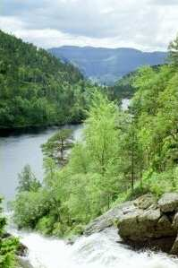
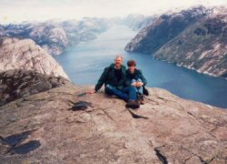

De beroemde bergformatie Preikestolen (De Preekstoel) trekt jaarlijks duizenden toeristen van over de hele wereld. De Preikestolen
is een plateau van ongeveer 30 bij 30 meter, gelegen bovenop een steile rotswand 600 meter boven de Lysefjord. Het gevoel
dat u krijgt wanneer u de kleine bootjes beneden ziet varen moet u gewoon meemaken.
De wandeling naar de Preikestolen begint op een uur autorijden van hier. De wandeling zelf duurt ongeveer 2 uur heen en 2
uur terug, dus dit is een goed idee voor een dagtocht.
Een andere interessante tocht leidt naar de Skomakernibbå, ons plaatselijke antwoord op de Preikestolen. Geniet tijdens de
wandeling van het uitzicht over het hele Ryfylke-gebied en over de Jøsenfjorden, 700 meter lager. Deze tocht is niet geschikt
voor kleine kinderen!
Vraag ons om andere wandelideeën. We hebben lange ervaring in de bergen en vinden heel zeker iets wat voor iedereen geschikt
is. U kunt bij ons ook wandelkaarten lenen.